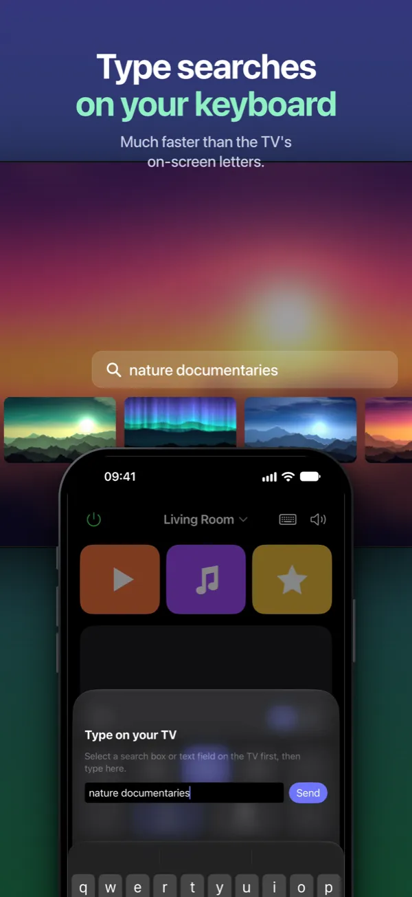
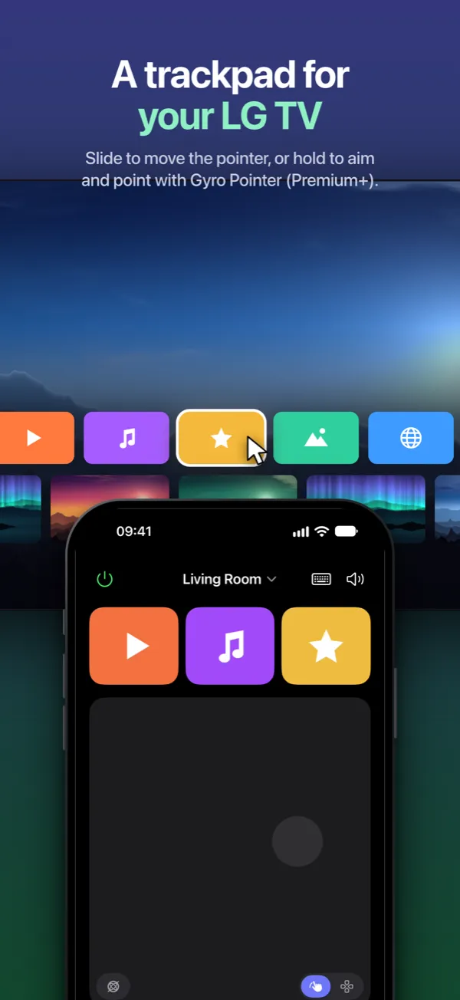
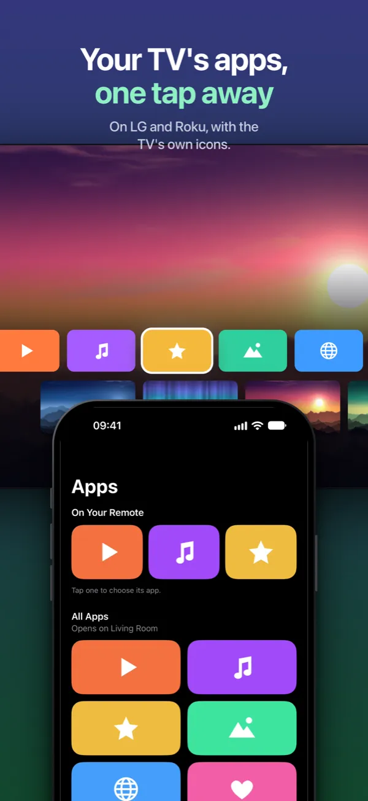

Wi-Fi TV remote
A universal TV remote for iPhone, iPad, Apple Watch and Mac
Cingle Remote turns your iPhone, iPad, Apple Watch and Mac into one remote for your TV, over your home Wi-Fi. No batteries to change, no need to aim, and no ads, ever.
Works with the TV you have
Cingle finds your TV on your Wi-Fi by itself, or you can add it by its IP address. Pick yours to see what works and how to connect.
Also Apple TV HD and Apple TV 4K, and TVs from Hisense, Xiaomi, Toshiba, Insignia, onn. and many more that run Google TV, Android TV, Fire TV or Roku. See the full list.
One remote, all your devices
Pair a TV on your iPhone and your Apple Watch is ready, with no code to type. Your iPad and Mac find the same TVs, and one Premium+ purchase covers them all with the same Apple Account.
iPhone and iPad
- Swipe and tap on a large pad, or use the arrows and OK
- Volume, mute, channels, a number pad, play/pause and 10-second skips
- The volume buttons on your iPhone change the TV's volume
- Open your TV's apps in one tap
- Type searches with your keyboard (LG, Samsung, Roku, Google TV, Fire TV, Apple TV and some others)
- A trackpad for the pointer on LG webOS TVs, and Gyro Pointer (Premium+)
- A remote widget, a TV Button in Control Center that presses a key without opening the app, and Siri (Premium+)
Apple Watch
Control your TV from your wrist: swipe and tap to move around, with Home, Back, Mute and Power, and the Digital Crown for volume. A tap on your wrist tells you when the TV is ready.
It needs Cingle Remote on your iPhone, and for every TV but Roku your iPhone needs to be nearby. For watchOS 10 or later.
Mac
The arrow keys move around, Return selects, Space plays or pauses, Delete goes back and number keys send numbers. The Remote menu has volume, channels, typing and the rest, with keyboard shortcuts.
On LG webOS TVs, your mouse or trackpad moves the TV's pointer. For macOS 15 or later.





No ads. No tracking.
Cingle shows no ads and uses no analytics or tracking. It talks to your TV directly over your Wi-Fi, and what it saves stays on your devices. There's no account to make.
Premium+
Without Premium+, Cingle keeps one TV, with every basic remote function. Premium+ adds several saved TVs, the Apple Watch app after its first two weeks, Bigger Remote on Mac, Gyro Pointer, Siri, the remote widget and the TV Button. It works on all your devices with the same Apple Account, and with Family Sharing.
Every TV Cingle supports
Cingle talks to each kind of TV in its own language, over your home Wi-Fi.
- LG webOS TVs, and LG NetCast TVs from 2012 and 2013
- Samsung smart TVs from 2016 on, and many from 2010 to 2015
- Roku TVs and players
- Google TV and Android TV, including Chromecast with Google TV, Google TV Streamer, NVIDIA Shield and Xiaomi TV Box
- Apple TV HD and Apple TV 4K with tvOS 15 or later
- Amazon Fire TV sticks, Cube and TVs; the volume stays with their own remote
- Philips TVs with Titan OS or Saphi, and older ones from about 2011
- Panasonic Viera TVs from about 2012 to 2024
- Sony Bravia TVs from about 2013 on
- Sharp AQUOS TVs with IP control, from about 2010 to 2016
- TCL and Thomson TVs on TCL's own system, from about 2014 to 2019
- TVs on Vestel's own smart system, sold as Vestel, Regal, Toshiba, Hitachi, JVC, Sharp, Telefunken, Finlux, Medion, Bush, Alba, ProCaster and Celcus
That includes Sony, Philips, Panasonic, Sharp, Toshiba, Insignia, TCL, Hisense, Xiaomi, Skyworth, Haier, Nokia, Motorola, Thomson, Grundig, Beko, onn., RCA and Pioneer TVs that run Google TV, Android TV, Fire TV or Roku.
Hisense's VIDAA TVs, and Beko and Grundig TVs on their own systems, aren't supported.
Your TV needs to be on the same Wi-Fi as your iPhone, iPad or Mac.
Get Cingle Remote
Your iPhone, iPad, Apple Watch and Mac, ready for your TV. No ads, ever.
For iOS 18, iPadOS 18, watchOS 10 and macOS 15 or later.
Questions? The support page has answers, and how to reach the developer.